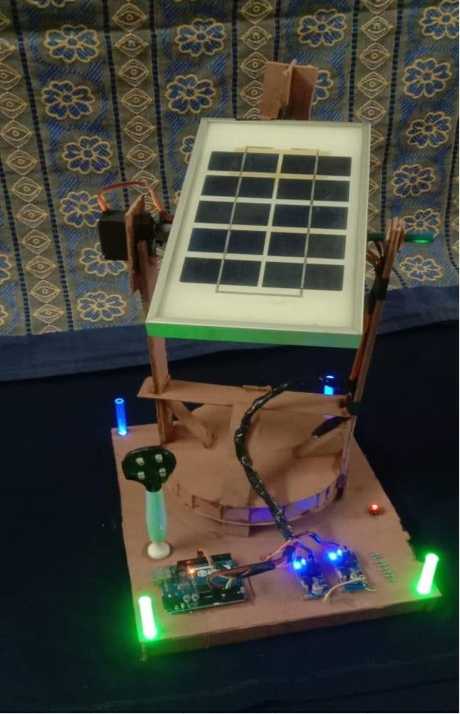

Academic Projects

Secure Digital Voting Machine
Designed using Verilog RTL and FSMs. Simulated using Icarus Verilog and GTKWave.

Real-Time Sobel Edge Detection
Implemented Sobel filter on Artix-7 FPGA with 46 filter features.